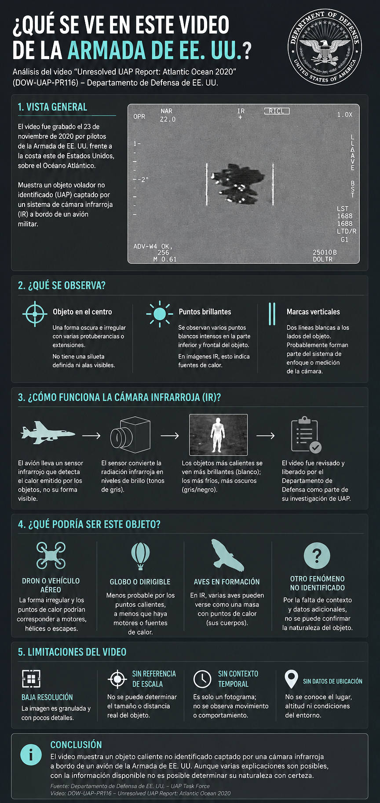

El viernes 10 de julio, WAR.GOV/UFO publicó su cuarta tanda de archivos bajo el programa PURSUE (Presidential Unsealing and Reporting System for UAP Encounters). Entre 19 videos militares infrarrojos que el propio Pentágono etiqueta como "reportes UAP no resueltos", uno concentró la mayor parte de las reacciones en redes desde la madrugada de su publicación: DOW-UAP-PR116, Unresolved UAP Report, Atlantic Ocean, 2020. Cuentas de seguimiento UAP con cientos de miles de seguidores lo compartieron en cuestión de minutos, antes incluso de que los medios especializados publicaran su análisis. No fue casualidad: la comunidad que sigue de cerca cada tanda de PURSUE llevaba semanas anticipando que esta cuarta entrega, la más cargada de video hasta ahora, traería el caso que "por fin" mostrara algo difícil de explicar.
El expediente, tal como lo publicó el Pentágono
Según el registro oficial en DVIDS, el archivo audiovisual público del Departamento de Guerra, el video corresponde a 32 segundos de metraje infrarrojo capturado en 2020 desde una plataforma militar estadounidense. El Comando Norte de EE.UU. (NORTHCOM) presentó el reporte original ante la AARO, la Oficina de Resolución de Anomalías de Todos los Dominios del Pentágono. Un documento complementario, catalogado como DOW-UAP-D091 ("Range Fouler Debrief"), describe el objeto observado.
Un objeto de color oscuro, entre marrón y rojizo, de aproximadamente 12 a 15 pies de altura, que se desplazaba con el viento y no realizó ninguna maniobra ni cambio de dirección — una apariencia comparable a "un globo grande y deforme".
Fuente: DOW-UAP-PR116 / DOW-UAP-D091 · DVIDS · Departamento de Guerra de EE.UU.La descripción del video en sí, publicada junto al archivo, es igual de austera: entre el segundo 1 y el 32, el sensor hace zoom y realiza paneos para mantener un área de contraste centrada en el cuadro. El propio Pentágono adjunta una advertencia estándar en cada uno de los 19 videos de esta tanda: la descripción se entrega únicamente con fines informativos y no debe interpretarse como un juicio analítico, una conclusión investigativa ni una determinación sobre la validez, naturaleza o importancia del evento.

Por qué este caso, y no otro, se volvió el más comentado
De los 19 videos "no resueltos" de la Release 04, varios ofrecen menos contexto verbal que PR116 y sin embargo generaron menos ruido. La razón parece tener menos que ver con la evidencia en sí que con la mecánica de la expectativa: la numeración de los casos —PR024 a PR116— venía con huecos evidentes desde tandas anteriores, y parte de la comunidad que sigue el archivo llevaba tiempo señalando esos números faltantes como una promesa de contenido más fuerte por venir. Cuando la cuarta tanda finalmente llenó ese hueco con un video acompañado de una descripción física detallada —color, altura, comportamiento—, muchos lo interpretaron como la confirmación de que "ya se sabía algo" antes de que se publicara.
Esa lectura no es del todo infundada: el Departamento de Guerra ha confirmado que estas tandas se preparan con semanas de anticipación y que los números de caso se asignan conforme se procesan los expedientes, no conforme se publican. Lo que no hay es evidencia de que la expectativa generada en redes estuviera coordinada por alguna fuente con acceso privilegiado al contenido. La brecha entre "sabíamos que venía algo" y "sabíamos qué era" es, en este caso, casi total.
El veredicto de los analistas: casi todos coinciden
The Debrief, uno de los pocos medios especializados que revisó el expediente completo el mismo día de su publicación, llegó a una conclusión que coincide con la de los propios testigos citados en el reporte: la dinámica de vuelo del objeto —sin maniobras, desplazándose pasivamente con el viento— es consistente con un objeto inflable, posiblemente un globo de forma irregular o un racimo de globos más pequeños. Analistas independientes en foros especializados como Metabunk llegaron por separado a la misma lectura, señalando que la ausencia de maniobra activa es precisamente el tipo de comportamiento que un globo climático o publicitario produciría de forma natural bajo viento constante.
Ningún analista consultado por la prensa especializada ha calificado a PR116 como uno de los casos más sólidos de la Release 04. Ese lugar se lo disputan otros expedientes del mismo lote: uno del este de Estados Unidos (2019), donde un piloto con 28 años de experiencia en la Fuerza Aérea y la Armada describió características de vuelo que no reconocía de ningún aparato conocido, y el ya célebre derribo de un objeto octogonal sobre el Lago Hurón en 2023, documentado en video y con recuperación de escombros — parte de la tanda anterior, la Release 02.
El propio Pentágono lo advierte en cada expediente: "no resuelto" no significa inexplicable. Significa, casi siempre, que no hay datos suficientes para cerrar el caso — en cualquier dirección.
PR116 en contexto: cómo se compara con el resto de la Release 04
| Caso | Ubicación / Año | Descripción | Lectura predominante |
|---|---|---|---|
| DOW-UAP-PR116 | Océano Atlántico, 2020 | Objeto oscuro sin maniobra, deriva con el viento | Probable objeto inflable |
| DOW-UAP-PR108 | Oeste de EE.UU., 2020 | Similitud superficial con el histórico video "Tic Tac" de 2004 | Sin contexto suficiente |
| DOW-UAP-PR112 | Este de EE.UU., 2019 | Testigo militar de 28 años describe dinámica de vuelo no reconocida | No resuelto |
| DOW-UAP-PR104 | Mar Amarillo, 2025 | Forma de "estrella de seis puntas" en el sensor | Probable artefacto óptico del sensor |
| DOW-UAP-PR030 | Medio Oriente, 2023 | Dos áreas de contraste cruzan el cuadro en direcciones opuestas | Sin contexto suficiente |
| NASA-UAP-D030 | Misión STS-80, 1996 | Objeto triangular fotografiado por la tripulación del Columbia | Posibles partículas de hielo de la nave |
PURSUE (Presidential Unsealing and Reporting System for UAP Encounters) es el portal público lanzado el 8 de mayo de 2026 por el Departamento de Guerra, en coordinación con la Oficina del Director de Inteligencia Nacional, el Departamento de Energía, la NASA y el FBI, tras una directiva del presidente Trump del 19 de febrero de 2026.
Tras cuatro tandas, el archivo acumula más de 300 expedientes desclasificados que abarcan más de ocho décadas, desde reportes de la Segunda Guerra Mundial hasta sensores militares de 2025. El propio Departamento de Guerra ha reconocido públicamente que la mayoría de los casos del archivo terminan explicándose por causas convencionales — drones, globos, aves o fenómenos meteorológicos.
Cronología: cuatro tandas en poco más de dos meses
Nota editorial
Cada nueva tanda de PURSUE deja la misma sensación incómoda: más preguntas que respuestas. ¿Quiénes son? ¿Qué quieren? ¿Por qué, si algo de origen no humano opera en nuestro espacio aéreo y marítimo con la libertad que sugieren décadas de reportes militares, no se ha producido jamás un contacto formal, verificable, sostenido? ¿Y por qué, del otro lado, los gobiernos que dicen estar comprometidos con la transparencia siguen administrando esta información en dosis de video borroso y comunicados con clausulas de exención de responsabilidad?
Vale la pena separar esas dos preguntas, porque probablemente no tengan la misma respuesta. Sobre el silencio de "ellos" —sean lo que sean— hay al menos tres lecturas posibles, y ninguna exige asumir mala fe. Puede que la ausencia de contacto formal sea, simplemente, la señal de que no hay una intención comunicativa dirigida a nosotros: que lo que se observa no es una embajada, sino un instrumento, una sonda o un fenómeno sin agencia, y que proyectarle intenciones —diplomáticas o invasivas— sea nuestro propio sesgo antropocéntrico hablando. Puede también que exista una asimetría de comprensión tan grande que "formal" no signifique lo mismo para ambas partes: que haya señales que ya estamos recibiendo y no sabemos leer, de la misma manera en que un insecto no reconoce un intento de comunicación humana como tal. Y puede, finalmente, que sí exista intención, y que la ausencia de contacto directo sea deliberada — una forma de observación que evita, precisamente, alterar el objeto de estudio.
Sobre el silencio de los gobiernos, la respuesta es menos especulativa, porque ahí sí hay incentivos conocidos. El secreto en torno a los UAP nunca ha necesitado una explicación extraordinaria: alcanza con la lógica ordinaria de cualquier aparato de seguridad nacional. Reconocer una capacidad de detección revela, a la vez, sus límites — y eso tiene valor para cualquier adversario. Admitir públicamente "no sabemos qué es esto" en tiempo real es, para una institución que basa su legitimidad en el control de la información, un costo político que se prefiere diferir. Y existe, además, un cálculo más frío todavía: el temor —documentado desde el informe Condon en los años sesenta— a que la confirmación de un fenómeno no explicado erosione la confianza pública en las instituciones, o desate un pánico imposible de administrar. Nada de esto requiere que haya una nave escondida en un hangar. Alcanza con la fricción normal entre lo que una burocracia sabe y lo que está dispuesta a admitir que no sabe.
La capa del hype y la sorpresa se está volviendo cada vez más delgada, y ellos —quienquiera que sean "ellos" en cada caso— lo saben. Saben que se rompe del todo el día que se muestre una apariencia física, una procedencia, una voz.
Ese es el umbral real que separa todo lo publicado hasta ahora de una revelación en el sentido fuerte de la palabra. Video borroso, testimonios bajo juramento, documentos con redacciones: todo eso sostiene la curiosidad sin obligar a nadie a cambiar de opinión. Lo que sí obligaría es un rostro, un origen verificable, una voz. Y da la impresión de que, tanda tras tanda, la distancia entre lo que se publica y ese umbral se acorta, aunque nadie diga en voz alta hacia dónde apunta la tendencia.
Esa incertidumbre no ocurre en el vacío. Este mismo año hemos visto un repliegue financiero y geopolítico acelerado, reacomodos de poder que todavía no terminan de explicarse del todo. No sostenemos que exista una relación causal entre ese repliegue y la disposición repentina de varios gobiernos a publicar archivos que llevaban décadas guardados — sería una afirmación que ninguna evidencia disponible sostiene. Pero sí es una pregunta legítima, y la dejamos planteada: ¿qué se está preparando, y forma parte esto de esa preparación?
Lo que sí es observable, sin necesidad de especular sobre naves ni orbes, es que las bases morales y las certezas compartidas de nuestra sociedad se están resquebrajando por todos lados a la vez — política, económica, epistémicamente. Todo parece apuntar hacia un mismo punto de inflexión: el día en que la humanidad que conocemos, la que heredamos, se enfrente por primera vez a la verdad completa sobre su lugar en el universo, sea cual sea esa verdad.
En Mundo Maravilloso no pretendemos ser meros observadores neutrales: tenemos una opinión, y preferimos decirla en lugar de esconderla detrás de una falsa objetividad. Pero queremos, sobre todo, que cada quien aporte su propio criterio. Quien escribe esta nota se identifica con el pensamiento crítico y cree que la mayoría de las evidencias presentadas como UAP tienen, tarde o temprano, una explicación convencional. En los casos que no la tienen —y PR116 probablemente no sea uno de ellos— es donde vale la pena concentrar el análisis, porque en esta era de desinformación e inteligencia artificial generativa cualquier cosa puede fabricarse; y aunque no fuera IA, conviene recordar que el CGI y el montaje llevan décadas conviviendo con nosotros. No se trata de descartar nada de entrada, sino de mantener todos los sentidos abiertos y dejar que el método —la evidencia, la réplica, la falsación— siga siendo la herramienta principal. Todavía desconocemos enormes zonas de la realidad, no solo a escala cósmica o subatómica, sino incluso a nivel de nuestra propia experiencia: somos organismos con capacidades que aún no comprendemos del todo, pero que forman parte de nuestro sistema nervioso y nuestra psique tanto como cualquier otra cosa medible. Así que la invitación es a seguir el propio instinto sin abandonar el rigor, y a continuar la búsqueda de una verdad que no adormece ni caduca.
- ¿Quiénes son —o qué son— los responsables de los casos que sí resisten el escrutinio dentro del archivo PURSUE?
- ¿Qué explica la ausencia total de un contacto formal y verificable, si la presencia reportada es tan constante como sugieren ocho décadas de expedientes?
- ¿Hasta dónde llegará la "transparencia" prometida antes de tropezar con un límite que ningún gobierno esté dispuesto a cruzar?
- ¿Existe alguna relación entre el ritmo acelerado de estas publicaciones y el momento geopolítico y financiero que atraviesa el mundo en 2026?
Fuentes primarias: registro del video en DVIDS y el archivo oficial en war.gov/UFO. Análisis: The Debrief (Micah Hanks) y el foro Metabunk. Cronología PURSUE: Wikipedia y reportes de Reuters, ABC News y AeroTime.